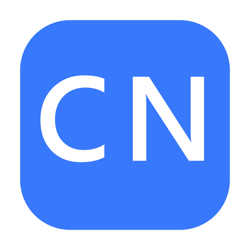
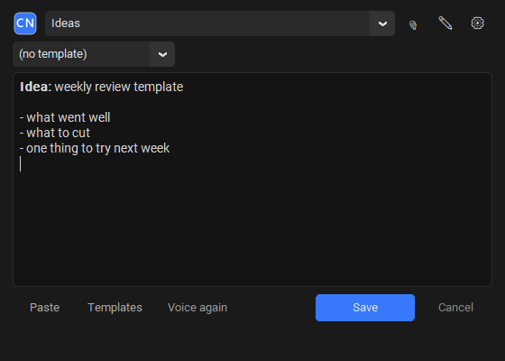
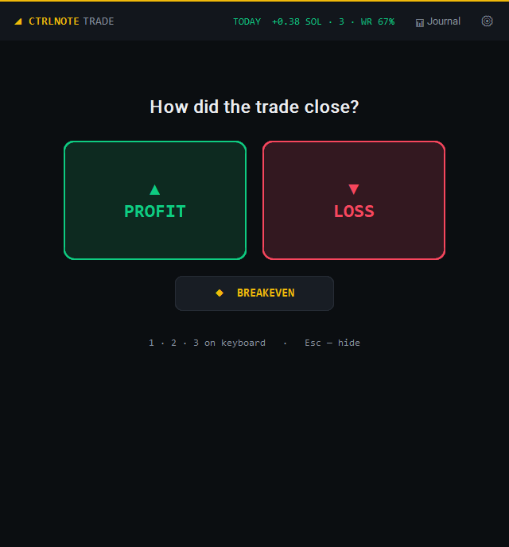
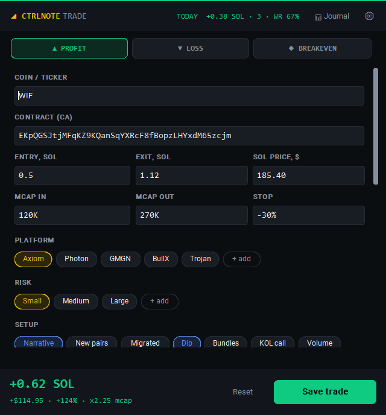

CtrlNote
Press Ctrl+Alt+N, then write, draw, paste or speak. The note is already in Obsidian.
Free and open source · Windows 10/11 · No account

Capture first, organize later
One hotkey, any app
Ctrl+Alt+N opens a small window on top of whatever you're doing. Ctrl+Enter saves, Esc hides.
Lands in the right folder
Pick a vault folder, or let CtrlNote guess it from the active window.
Voice, offline
Dictate with local Whisper. Your audio never leaves your PC unless you choose OpenAI.
Draw & paste
Sketch on a canvas or paste a screenshot. It's saved as a PNG next to the note.
Plain Markdown
Ordinary .md files with readable names. No database, no lock-in.
English & Russian
Choose the language on first launch, then switch any time in Settings.
◢ CTRLNOTE TRADER
A trading journal you'll actually keep
Built for fast markets like Solana memecoins. Hit Ctrl+Alt+T right after you close a position, pick profit or loss, tap a few chips, and you're back to the chart in about 20 seconds.


- Live PnL in SOL, USD and %. The SOL price is fetched for you.
- Contract address auto-filled from your clipboard.
- Market cap in → out, stop, platform, risk and a ★ execution score.
- Your own chips for setups, emotions and mistakes. Add or remove any of them.
- One note per trade with Obsidian properties, plus chart screenshots.
- 📊 Trade journal note with stats by day, setup, mistake and emotion. No plugins.
- Anti-tilt: a red warning after 3 losses in a row.
- What mistakes cost you, in SOL, so you stop repeating them.
Pick your edition
CtrlNote
Quick notes into Obsidian: text, voice, drawings and screenshots from one hotkey.
CtrlNote-Setup.exeCtrlNote Trader
Everything in CtrlNote plus the trading journal on Ctrl+Alt+T. Install it over CtrlNote at any time; your settings stay.
CtrlNote-Trader-Setup.exeWindows SmartScreen may warn about an unsigned installer: More info → Run anyway.